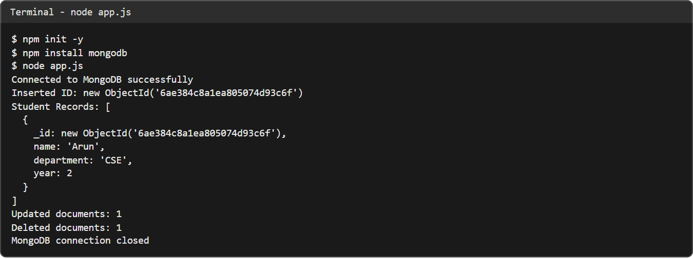
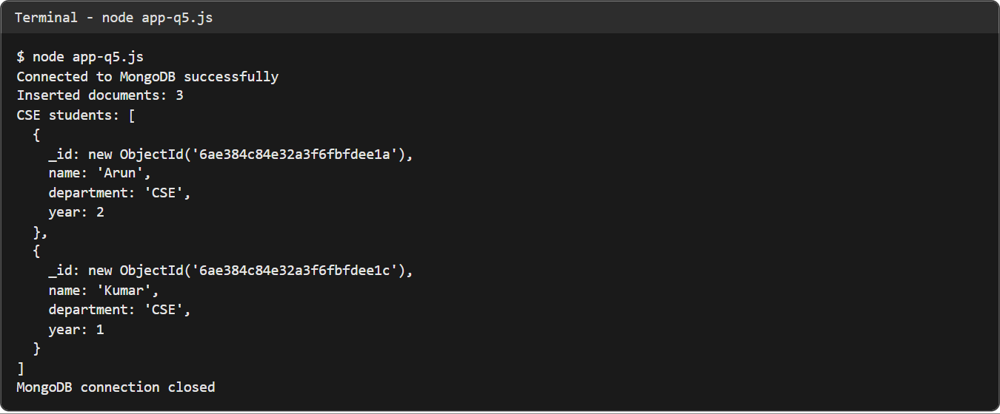

Ex. No. 11 – Database Integration in Node.js Application Using MongoDB
A Node.js program that connects to MongoDB with the official driver and performs insert, find, update and delete operations on CollegeDB.Students.
This is a server-side exercise, so GitHub Pages can only show the source and the output captured from a real local run (Node.js, MongoDB 8.2 and mongosh on the author's machine).
Source code
app.js
const { MongoClient } = require('mongodb');
const url = 'mongodb://127.0.0.1:27017';
const client = new MongoClient(url);
async function main() {
try {
// Connect to MongoDB
await client.connect();
console.log('Connected to MongoDB successfully');
// Select database and collection
const db = client.db('CollegeDB');
const students = db.collection('Students');
// Insert a document
const insertResult = await students.insertOne({
name: 'Arun',
department: 'CSE',
year: 2
});
console.log('Inserted ID:', insertResult.insertedId);
// Retrieve documents
const allStudents = await students.find({}).toArray();
console.log('Student Records:', allStudents);
// Update a document
const updateResult = await students.updateOne(
{ name: 'Arun' },
{ $set: { year: 3 } }
);
console.log('Updated documents:', updateResult.modifiedCount);
// Delete a document
const deleteResult = await students.deleteOne({
name: 'Arun'
});
console.log('Deleted documents:', deleteResult.deletedCount);
} catch (error) {
console.error('Database error:', error.message);
} finally {
await client.close();
console.log('MongoDB connection closed');
}
}
main();
app-q5.js
// Sample question 5: insert three student records and display the CSE students.
const { MongoClient } = require('mongodb');
const client = new MongoClient('mongodb://127.0.0.1:27017');
async function main() {
try {
await client.connect();
console.log('Connected to MongoDB successfully');
const students = client.db('CollegeDB').collection('Students');
await students.deleteMany({});
const result = await students.insertMany([
{ name: 'Arun', department: 'CSE', year: 2 },
{ name: 'Priya', department: 'IT', year: 3 },
{ name: 'Kumar', department: 'CSE', year: 1 }
]);
console.log('Inserted documents:', result.insertedCount);
const cse = await students.find({ department: 'CSE' }).toArray();
console.log('CSE students:', cse);
} catch (error) {
console.error('Database error:', error.message);
} finally {
await client.close();
console.log('MongoDB connection closed');
}
}
main();
Output

